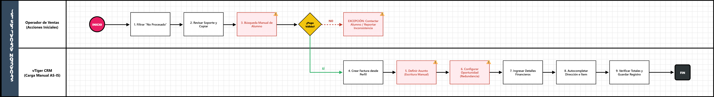
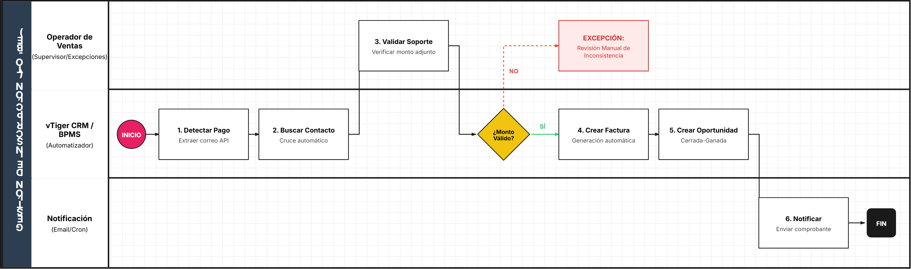

1.AS-IS (INCRIPCION) TO-BE
1. Identificación y Alcance del Proceso
Esta sección establece el contexto general y los límites del proceso de negocio en su estado actual.
Campo | Descripción | Contenido |
|---|---|---|
Nombre del Proceso | Gestión y Creación de Facturas por Inscripción (Nuevos Ingresos) | Proceso operativo de facturación comercial. |
Objetivo del Proceso | ¿Para qué existe este proceso? | Generar correctamente la factura comercial en el CRM para estudiantes de nuevo ingreso. |
Punto de Inicio | ¿Qué evento desencadena el proceso? | Identificación de un registro "No Procesado" en el módulo Payment Record. |
Punto de Fin | ¿Cuál es el resultado final? | Factura guardada en el sistema con ítems y montos validados. |
Documento Fuente | Documento analizado. | MANUAL 1: Gestión y Creación de Facturas por Inscripción. |
2. Actores Involucrados (Pools y Carriles / Lanes)
Actor (Lane) | Rol en el Proceso | Responsabilidades Clave |
|---|---|---|
Operador de Ventas | Ejecutor | Revisar soportes, buscar contactos y registrar datos financieros. |
vTiger CRM | Sistema / Plataforma | Almacenar registros, vincular oportunidades y procesar facturas. |
3. Detalle de Actividades y Flujo AS-IS (Secuencia Lógica)
No. | Actor (Lane) | Tarea / Actividad (Task) | Documentos / Sistemas Involucrados |
|---|---|---|---|
1 | Operador | Filtrar estados "No Procesado" y concepto "Inscripción". | vTiger (Payment Record) |
2 | Operador | Revisar Soporte de Pago y copiar correo electrónico. | Soporte de Pago adjunto |
3 | Operador | Buscar alumno por correo o cédula. | vTiger (Contactos) |
4 | Operador | Crear nueva Factura desde el perfil del alumno. | vTiger (Lista relacionada) |
5 | Operador | Definir Asunto y seleccionar programa del diplomado. | Formulario de Factura |
6 | Operador | Crear y configurar Oportunidad (Cerrada-Ganada). | vTiger (Módulo Oportunidades) |
7 | Operador | Ingresar detalles financieros (Banco, Fecha, Monto, Referencia). | Voucher de pago |
8 | Operador | Autocompletar dirección y seleccionar ítem del diplomado. | vTiger (Detalles Elemento) |
9 | Operador | Verificar totales y guardar el registro. | vTiger CRM |
4. Reglas de Negocio y Puertas de Enlace (Gateways)
Puerta de Enlace Analizada 1: ¿La información del pago es válida?
- 🟢 Camino "SÍ": Los datos del voucher coinciden con el registro. Se procede a crear la factura.
- 🔴 Camino "NO": Se debe contactar al alumno o reportar inconsistencia (flujo de excepción).
Puerta de Enlace Analizada 2: Configuración de la Oportunidad.
- 🟢 Regla: La Fase de Venta debe ser "Cerrada-Ganada" para asegurar la correcta ejecución del reporte de ingresos.
5. Identificación Inicial de Puntos de Dolor
- Búsqueda Manual: El operador debe copiar y pegar el correo entre módulos manualmente, lo que consume tiempo y genera riesgo de error.
- Entrada de Datos Redundante: El nombre del "Asunto" debe escribirse manualmente tanto en la Factura como en la Oportunidad.
- Validación Humana: El cotejo entre el "Precio de Venta" y el voucher es puramente visual, sin una regla de validación automática en el sistema.

1. Identificación y Alcance del Proceso (TO-BE)
Esta sección define el estado futuro y mejorado del flujo de facturación, priorizando la agilidad y la trazabilidad total.
Campo | Descripción | Contenido |
|---|---|---|
Nombre del Proceso | Gestión Automatizada de Facturación y Oportunidades | Proceso optimizado de ingresos. |
Objetivo del Proceso | ¿Qué valor aporta la mejora? | Reducir el tiempo de ciclo de facturación y eliminar errores de digitación mediante la sincronización automática de datos entre el pago y la factura. |
Punto de Inicio | ¿Qué dispara el proceso? | Registro de un nuevo pago en el módulo Payment Record vía API o entrada manual. |
Punto de Fin | ¿Cuál es el resultado final? | Factura generada, Oportunidad cerrada y notificación automática al estudiante. |
Documento Fuente | Base del análisis. | Análisis AS-IS: Gestión y Creación de Facturas por Inscripción. |
2. Actores Involucrados (Lanes)
En este modelo, el sistema asume un rol activo para realizar tareas que antes eran manuales.
- Operador de Ventas (Iniciador/Supervisor): Responsable de validar casos de excepción y supervisar la integridad de los datos financieros.
- Sistema BPMS / vTiger (Automatizador): Enruta tareas, realiza búsquedas automáticas en la base de datos y genera registros vinculados sin intervención humana.
- Servicio de Notificación (Email/Cron): Informa al cliente y al equipo interno sobre el estado de la transacción.
3. Detalle de Actividades y Flujo TO-BE
Se diferencia entre tareas de usuario (User Task) y tareas automáticas del sistema (Service Task).
No. | Actor | Tarea / Actividad | Tipo de Tarea (BPMN) |
|---|---|---|---|
1 | vTiger CRM | Detectar nuevo registro de pago y extraer correo electrónico. | Service Task |
2 | vTiger CRM | Buscar contacto coincidente por correo o ID automáticamente. | Service Task |
3 | Operador | Validar que el soporte adjunto coincida con el monto registrado. | User Task |
4 | vTiger CRM | Crear Factura vinculada al contacto con datos del programa. | Service Task |
5 | vTiger CRM | Crear Oportunidad "Cerrada-Ganada" heredando datos de la factura. | Service Task |
6 | Sistema | ¿Validación exitosa? (Puerta de enlace lógica). | Gateway Exclusive |
7 | Servicio Email | Enviar comprobante de factura al correo del alumno. | Service Task |
4. Reglas de Negocio y Puertas de Enlace (Gateways)
Puerta de Enlace 1: ¿Conciliación de Montos Exitosa?
- 🟢 Camino "SÍ" (Flujo de Continuidad):
- Criterio: El monto del voucher cargado coincide con el valor del ítem seleccionado.
- Resultado: El sistema genera la factura y cierra la oportunidad automáticamente.
- 🔴 Camino "NO" (Flujo de Excepción):
- Criterio: Discrepancia entre el pago reportado y el valor del programa.
- Resultado: Se crea una tarea de "Revisión Manual" para el Operador y se detiene el flujo de facturación.
5. Beneficios y Mejoras Implementadas (Justificación)
- Eliminación de Búsqueda Manual: El sistema realiza el cruce de correos electrónicos automáticamente, eliminando el riesgo de asociar facturas a contactos incorrectos.
- Integración de Datos: Se erradica la redundancia; el "Asunto" y los detalles financieros se completan una sola vez y se propagan a la Factura y Oportunidad.
- Trazabilidad: El solicitante (alumno) recibe una confirmación inmediata, y el proceso queda registrado con sellos de tiempo exactos en el BPMS.
